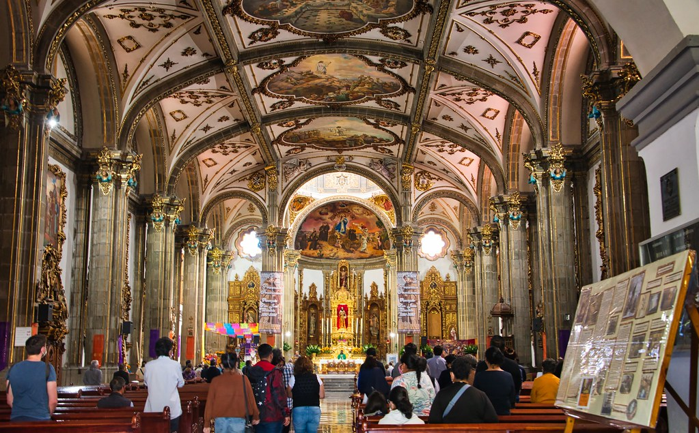

FAMOUS PLACES

CABO SAN LUCAS
About Cabo San Lucas:
Cabo San Lucas, a vibrant Mexican resort town at the tip of the Baja California Peninsula!
1. Location: Baja California Sur, Mexico
2. Population: Approximately 70,000
3. Language: Spanish (English widely spoken)
4. Currency: Mexican Peso (USD widely accepted)
5. Time Zone: Pacific Standard Time (UTC-8)
Best Season TO visit
1. Fall (September to November): Comfortable temperatures (75-85°F/24-29°C), fewer crowds.
2. Spring (March to May): Mild temperatures (70-80°F/21-27°C), whale watching season.
3. Winter (December to February): Cooler temperatures (65-75°F/18-24°C), holiday season.

GUADALAJARAS HISTORIC
About Guadalajaras Historic :
Guadalajara, a vibrant Mexican city rich in history and culture!
1. Founded: 1542 by Spanish conquistador Nuño de Guzmán
2. Name: Named after the Spanish city of Guadalajara
3. Location: Jalisco state, western Mexico
4. Population: Approximately 5 million
5. Nickname: "The Pearl of the West"
Best Season to Visit:
1. Spring (March to May): Mild temperatures (75-85°F/24-29°C), festivals, and outdoor events.
2. Fall (September to November): Comfortable temperatures (70-80°F/21-27°C), cultural celebrations.
3. Winter (December to February): Cooler temperatures (60-75°F/16-24°C), holiday season.

TULUM NATTIONAL PARK
About Tulum National Park
Tulum National Park, a stunning ancient Mayan city on Mexico's Caribbean coast!
1. Location: Quintana Roo, Mexico
2. Size: 40 hectares (99 acres)
3. Founded: 1200 AD (Mayan civilization)
4. Name: Tulum (Meaning: "Wall" or "Fortress")
5. UNESCO World Heritage Site: 1992
Best Season to Visit:
1. Dry Season (December to April): Comfortable temperatures (77-85°F/25-29°C), low humidity.
2. Shoulder Season (May to June, November to December): Fewer tourists, lower prices.
3. Avoid Rainy Season (July to October): Heavy rainfall, potential hurricanes.

COYOCAM
About Coyocan
Coyoacán, a charming and historic neighborhood in Mexico City!
1. Location: Southwestern Mexico City, Mexico
2. Name: Coyoacán (Meaning: "Place of Coyotes")
3. Founded: 1521 (Pre-Hispanic settlement)
4. Population: Approximately 620,000
5. Landmarks: Frida Kahlo Museum, Coyoacán Cathedral, Viveros de Coyoacán
Best Season to Visit:
1. Spring (March to May): Mild temperatures (64-77°F/18-25°C), festivals.
2. Fall (September to November): Comfortable temperatures (57-75°F/14-24°C), cultural events.
3. Avoid Rainy Season (June to August): Heavy rainfall, flooding.